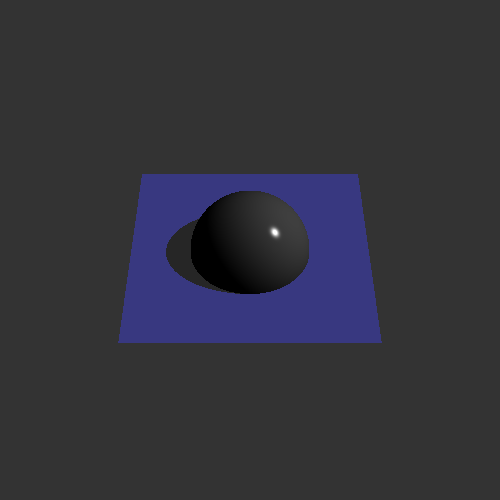
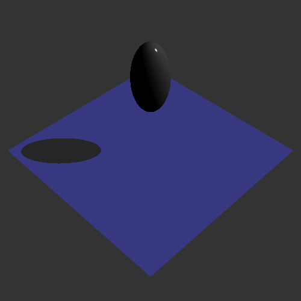
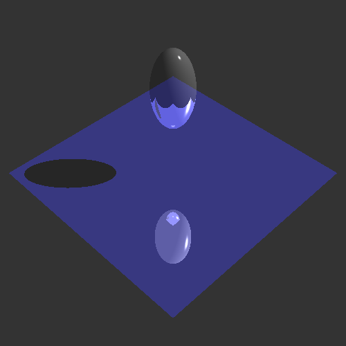
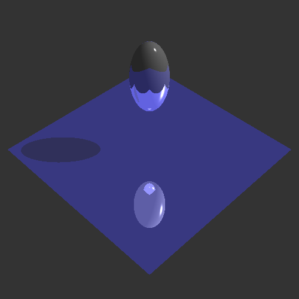
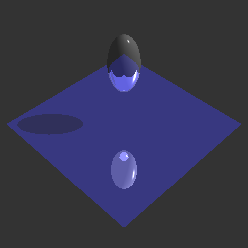
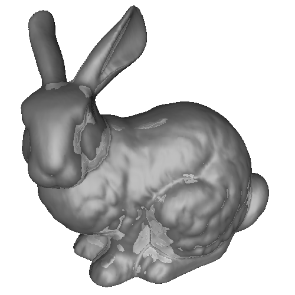
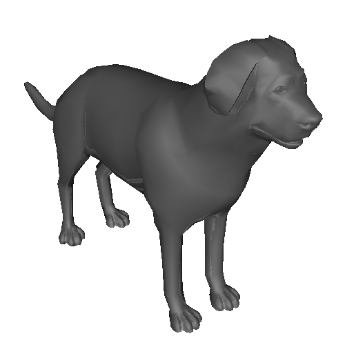
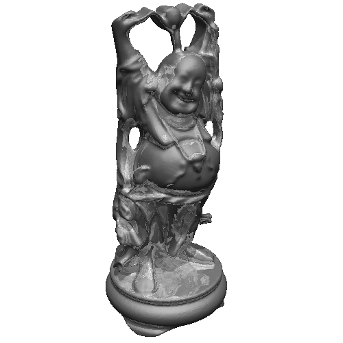
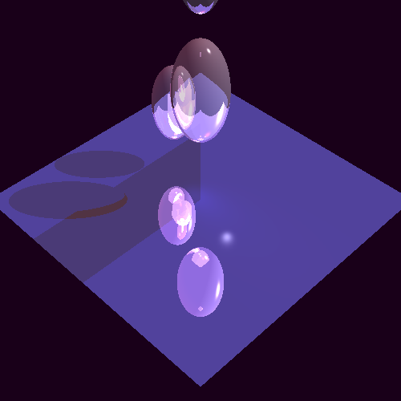

Name: Peiyi Zheng
JHED ID: pzheng4
Compiler: gcc 5.4.0
Environment: Ubuntu 16.04
Number of late days used: 0
Command: Bin/Linux/Assignment2 --in *.ray --out *.bmp --width 500 --height 500 --rLimit 5 --cLimit 0.0001
|  |
|  |
|  |
|  |
|  |
|  |
|  |
|  |
|  |
All features above jittered supersampling
with "Generate a 3D scene and save it as a .ray file"
and RayBox::intersect